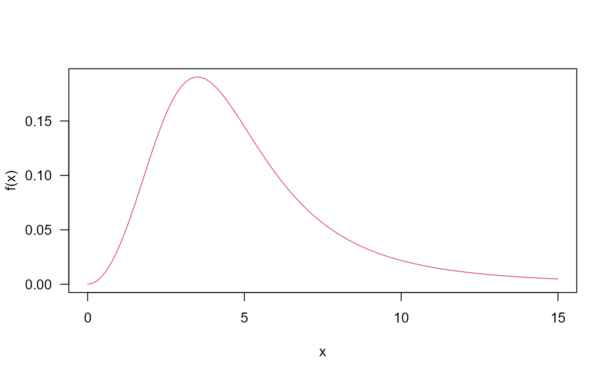
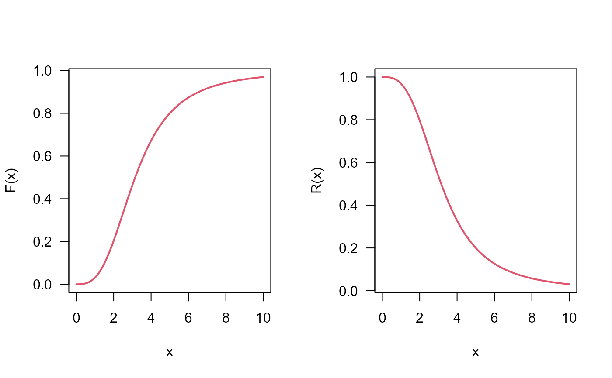

Desnsity, distribution function, quantile function,
random generation and hazard function for the Marshall-Olkin Kappa distribution
with parameters mu, sigma, nu and tau.
dMOK(x, mu, sigma, nu, tau, log = FALSE)
pMOK(q, mu, sigma, nu, tau, lower.tail = TRUE, log.p = FALSE)
qMOK(p, mu, sigma, nu, tau, lower.tail = TRUE, log.p = FALSE)
rMOK(n, mu, sigma, nu, tau)
hMOK(x, mu, sigma, nu, tau)Arguments
- x, q
vector of quantiles.
- mu
parameter.
- sigma
parameter.
- nu
parameter.
- tau
parameter.
- log, log.p
logical; if TRUE, probabilities p are given as log(p).
- lower.tail
logical; if TRUE (default), probabilities are P[X <= x], otherwise, P[X > x].
- p
vector of probabilities.
- n
number of observations.
Value
dMOK gives the density, pMOK gives the distribution function,
qMOK gives the quantile function, rMOK generates random deviates
and hMOK gives the hazard function.
Details
The Marshall-Olkin Kappa distribution with parameters mu,
sigma, nu and tau has density given by:
\(f(x)=\frac{\tau\frac{\mu\nu}{\sigma}\left(\frac{x}{\sigma}\right)^{\nu-1} \left(\mu+\left(\frac{x}{\sigma}\right)^{\mu\nu}\right)^{-\frac{\mu+1}{\mu}}}{\left[\tau+(1-\tau)\left(\frac{\left(\frac{x}{\sigma}\right)^{\mu\nu}}{\mu+\left(\frac{x}{\sigma}\right)^{\mu\nu}}\right)^{\frac{1}{\mu}}\right]^2}\)
for x > 0.
References
Javed M, Nawaz T, Irfan M (2018). “The Marshall-Olkin kappa distribution: properties and applications.” Journal of King Saud University-Science.
Examples
## The probability density function
par(mfrow = c(1,1))
curve(dMOK(x = x, mu = 1, sigma = 3.5, nu = 3, tau = 2), from = 0, to = 15,
ylab = 'f(x)', col = 2, las = 1)

## The cumulative distribution and the Reliability function
par(mfrow = c(1,2))
curve(pMOK(q = x, mu = 1, sigma = 2.5, nu = 3, tau = 2), from = 0, to = 10,
col = 2, lwd = 2, las = 1, ylab = 'F(x)')
curve(pMOK(q = x, mu = 1, sigma = 2.5, nu = 3, tau = 2, lower.tail = FALSE), from = 0, to = 10,
col = 2, lwd = 2, las = 1, ylab = 'R(x)')

## The quantile function
p <- seq(from = 0.00001, to = 0.99999, length.out = 100)
plot(x = qMOK(p = p, mu = 4, sigma = 2.5, nu = 3, tau = 2), y = p, xlab = 'Quantile',
las = 1, ylab = 'Probability')
curve(pMOK(q = x, mu = 4, sigma = 2.5, nu = 3, tau = 2), from = 0, to = 15,
add = TRUE, col = 2)
## The random function
hist(rMOK(n = 10000, mu = 1, sigma = 2.5, nu = 3, tau = 2), freq = FALSE,
xlab = "x", las = 1, main = '', ylim = c(0,.3), xlim = c(0,20), breaks = 50)
curve(dMOK(x, mu = 1, sigma = 2.5, nu = 3, tau = 2), from = 0, to = 15, add = TRUE, col = 2)
 ## The Hazard function
par(mfrow = c(1,1))
curve(hMOK(x = x, mu = 1, sigma = 2.5, nu = 3, tau = 2), from = 0, to = 20,
col = 2, ylab = 'Hazard function', las = 1)
## The Hazard function
par(mfrow = c(1,1))
curve(hMOK(x = x, mu = 1, sigma = 2.5, nu = 3, tau = 2), from = 0, to = 20,
col = 2, ylab = 'Hazard function', las = 1)